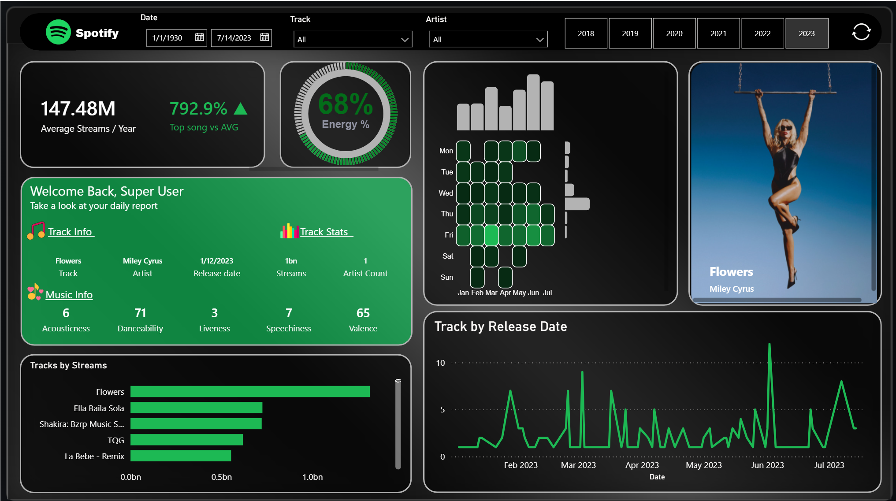

Project walkthrough
Spotify Track Explorer
Compare track popularity, release patterns and audio characteristics.

The question
How do tracks compare by recorded streams, release date and audio profile?
The approach
Start with the overall picture, select a period or product, and compare the filtered view. Check the active filters and metric definitions before interpreting a result.
Inside the report
- Artist, track and date filters
- Stream ranking and release-date charts
- Audio-feature cards, including danceability, acousticness and valence
- Deneb and HTML custom visuals
Release dates describe music releases, not daily listening activity. The preview reflects one saved selection; it is not a live dashboard.
Available now
This walkthrough describes the supplied report structure. The revised PBIX is awaiting final Power BI Desktop validation. A public interactive report link will be added after validation.